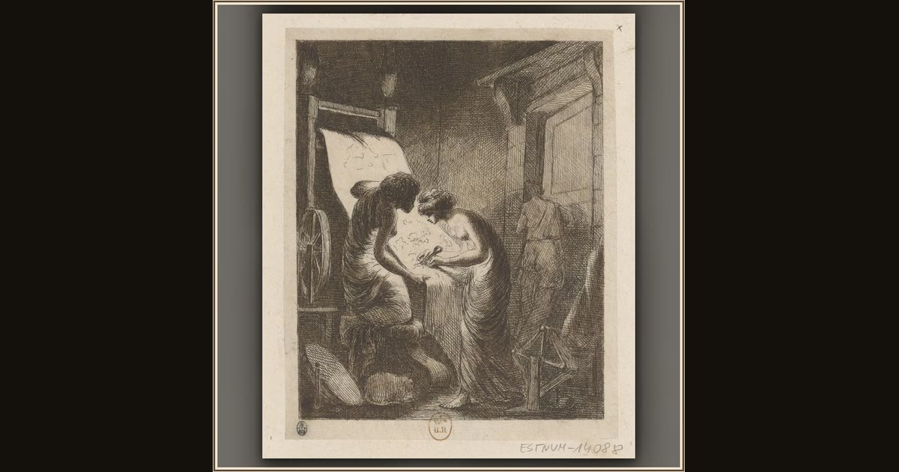

Penelope Undoing Her Day's Work by Night
Dominique-Vivant Denon · 18th century · Bibliothèque nationale de France · Paris, France
By lamplight, Penelope and a trusted maid carefully unpick the day's weaving — the secret nighttime trick that kept the suitors waiting for years. Explore its place in Book II of the Odyssey.